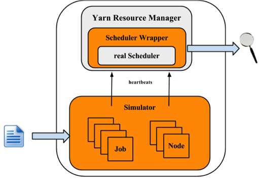
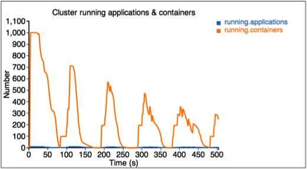
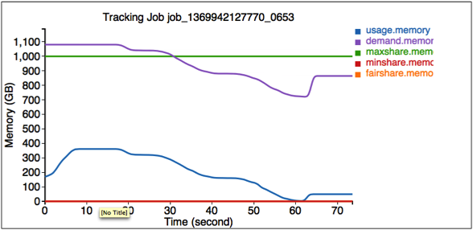

The YARN scheduler is a fertile area of interest with different implementations, e.g., Fifo, Capacity and Fair schedulers. Meanwhile, several optimizations are also made to improve scheduler performance for different scenarios and workload. Each scheduler algorithm has its own set of features, and drives scheduling decisions by many factors, such as fairness, capacity guarantee, resource availability, etc. It is very important to evaluate a scheduler algorithm very well before we deploy in a production cluster. Unfortunately, currently it is non-trivial to evaluate a scheduler algorithm. Evaluating in a real cluster is always time and cost consuming, and it is also very hard to find a large-enough cluster. Hence, a simulator which can predict how well a scheduler algorithm for some specific workload would be quite useful.
The YARN Scheduler Load Simulator (SLS) is such a tool, which can simulate large-scale YARN clusters and application loads in a single machine.This simulator would be invaluable in furthering YARN by providing a tool for researchers and developers to prototype new scheduler features and predict their behavior and performance with reasonable amount of confidence, thereby aiding rapid innovation. o The simulator will exercise the real YARN ResourceManager removing the network factor by simulating NodeManagers and ApplicationMasters via handling and dispatching NM/AMs heartbeat events from within the same JVM. To keep tracking of scheduler behavior and performance, a scheduler wrapper will wrap the real scheduler.
The size of the cluster and the application load can be loaded from configuration files, which are generated from job history files directly by adopting Apache Rumen.
The simulator will produce real time metrics while executing, including:
Resource usages for whole cluster and each queue, which can be utilized to configure cluster and queue’s capacity.
The detailed application execution trace (recorded in relation to simulated time), which can be analyzed to understand/validate the scheduler behavior (individual jobs turn around time, throughput, fairness, capacity guarantee, etc.).
Several key metrics of scheduler algorithm, such as time cost of each scheduler operation (allocate, handle, etc.), which can be utilized by Hadoop developers to find the code spots and scalability limits.
Exercise the scheduler at scale without a real cluster using real job traces.
Being able to simulate real workloads.
The following figure illustrates the implementation architecture of the simulator.

The simulator takes input of workload traces, or synthetic load distributions and generaters the cluster and applications information. For each NM and AM, the simulator builds a simulator to simulate their running. All NM/AM simulators run in a thread pool. The simulator reuses YARN Resource Manager, and builds a wrapper out of the scheduler. The Scheduler Wrapper can track the scheduler behaviors and generates several logs, which are the outputs of the simulator and can be further analyzed.
Engineering
QA
Solutions/Sales.
This section will show how to use the simulator. Here let $HADOOP_ROOT represent the Hadoop install directory. If you build Hadoop yourself, $HADOOP_ROOT is hadoop-dist/target/hadoop-$VERSION. The simulator is located at $HADOOP_ROOT/share/hadoop/tools/sls. The fold sls containers four directories: bin, html, sample-conf, and sample-data
bin: contains running scripts for the simulator.
html: Users can also reproduce those real-time tracking charts in offline mode. Just upload the realtimetrack.json to $HADOOP_ROOT/share/hadoop/tools/sls/html/showSimulationTrace.html. For browser security problem, need to put files realtimetrack.json and showSimulationTrace.html in the same directory.
sample-conf: specifies the simulator configurations.
sample-data: provides an example rumen trace, which can be used to generate inputs of the simulator.
The following sections will describe how to use the simulator step by step. Before start, make sure that command hadoop is included in your $PATH environment parameter.
Before we start, make sure Hadoop and the simulator are configured well. All configuration files for Hadoop and the simulator should be placed in directory $HADOOP_ROOT/etc/hadoop, where the ResourceManager and YARN scheduler load their configurations. Directory $HADOOP_ROOT/share/hadoop/tools/sls/sample-conf/ provides several example configurations, that can be used to start a demo.
For configuration of Hadoop and YARN scheduler, users can refer to Yarn’s website (http://hadoop.apache.org/docs/current/hadoop-yarn/hadoop-yarn-site/).
For the simulator, it loads configuration information from file $HADOOP_ROOT/etc/hadoop/sls-runner.xml.
Here we illustrate each configuration parameter in sls-runner.xml. Note that $HADOOP_ROOT/share/hadoop/tools/sls/sample-conf/sls-runner.xml contains all the default values for these configuration parameters.
yarn.sls.runner.pool.size
The simulator uses a thread pool to simulate the NM and AM running, and this parameter specifies the number of threads in the pool.
yarn.sls.nm.memory.mb
The total memory for each NMSimulator.
yarn.sls.nm.vcores
The total vCores for each NMSimulator.
yarn.sls.nm.heartbeat.interval.ms
The heartbeat interval for each NMSimulator.
yarn.sls.am.heartbeat.interval.ms
The heartbeat interval for each AMSimulator.
yarn.sls.am.type.mapreduce
The AMSimulator implementation for MapReduce-like applications. Users can specify implementations for other type of applications.
yarn.sls.container.memory.mb
The memory required for each container simulator.
yarn.sls.container.vcores
The vCores required for each container simulator.
yarn.sls.runner.metrics.switch
The simulator introduces Metrics to measure the behaviors of critical components and operations. This field specifies whether we open (ON) or close (OFF) the Metrics running.
yarn.sls.metrics.web.address.port
The port used by simulator to provide real-time tracking. The default value is 10001.
org.apache.hadoop.yarn.server.resourcemanager.scheduler.fifo.FifoScheduler
The implementation of scheduler metrics of Fifo Scheduler.
org.apache.hadoop.yarn.server.resourcemanager.scheduler.fair.FairScheduler
The implementation of scheduler metrics of Fair Scheduler.
org.apache.hadoop.yarn.server.resourcemanager.scheduler.capacity.CapacityScheduler
The implementation of scheduler metrics of Capacity Scheduler.
The simulator supports two types of input files: the rumen traces and its own input traces. The script to start the simulator is slsrun.sh.
$ cd $HADOOP_ROOT/share/hadoop/tools/sls
$ bin/slsrun.sh
Usage: slsrun.sh <OPTIONS>
--tracetype=<SYNTH | SLS | RUMEN>
--tracelocation=<FILE1,FILE2,...>
(deprecated --input-rumen=<FILE1,FILE2,...> | --input-sls=<FILE1,FILE2,...>)
--output-dir=<SLS_SIMULATION_OUTPUT_DIRECTORY>
[--nodes=<SLS_NODES_FILE>]
[--track-jobs=<JOBID1,JOBID2,...>]
[--print-simulation]
--input-rumen: The input rumen trace files. Users can input multiple files, separated by comma. One example trace is provided in $HADOOP_ROOT/share/hadoop/tools/sls/sample-data/2jobs2min-rumen-jh.json. This is equivalent to --tracetype=RUMEN --tracelocation=<path_to_trace>.
--input-sls: Simulator its own file format. The simulator also provides a tool to convert rumen traces to sls traces (rumen2sls.sh). Refer to appendix for an example of sls input json file. This is equivalent to --tracetype=SLS --tracelocation=<path_to_trace>.
--tracetype: This is the new way to configure the trace generation and takes values RUMEN, SLS, or SYNTH, to trigger the three type of load generation
--tracelocation: Path to the input file, matching the tracetype above.
--output-dir: The output directory for generated running logs and metrics.
--nodes: The cluster topology. By default, the simulator will use the topology fetched from the input json files. Users can specifies a new topology by setting this parameter. Refer to the appendix for the topology file format.
--track-jobs: The particular jobs that will be tracked during simulator running, spearated by comma.
--print-simulation: Whether to print out simulation information before simulator running, including number of nodes, applications, tasks, and information for each application.
In comparison to rumen format, here the sls format is much simpler and users can easily generate various workload. The simulator also provides a tool to convert rumen traces to sls traces.
$ bin/rumen2sls.sh
--rumen-file=<RUMEN_FILE>
--output-dir=<SLS_OUTPUT_DIRECTORY>
[--output-prefix=<SLS_FILE_PREFIX>]
--rumen-file: The rumen format file. One example trace is provided in directory sample-data.
--output-dir: The output directory of generated simulation traces. Two files will be generated in this output directory, including one trace file including all job and task information, and another file showing the topology information.
--output-prefix: The prefix of the generated files. The default value is “sls”, and the two generated files are sls-jobs.json and sls-nodes.json.
The YARN Scheduler Load Simulator has integrated Metrics to measure the behaviors of critical components and operations, including running applications and containers, cluster available resources, scheduler operation timecost, et al. If the switch yarn.sls.runner.metrics.switch is set ON, Metrics will run and output it logs in --output-dir directory specified by users. Users can track these information during simulator running, and can also analyze these logs after running to evaluate the scheduler performance.
The simulator provides an interface for tracking its running in real-time. Users can go to http://host:port/simulate to track whole running, and http://host:port/track to track a particular job or queue. Here the host is the place when we run the simulator, and port is the value configured by yarn.sls.metrics.web.address.port (default value is 10001).
Here we’ll illustrate each chart shown in the webpage.
The first figure describes the number of running applications and containers.

The second figure describes the allocated and available resources (memory) in the cluster.
The third figure describes the allocated resource for each queue. Here we have three queues: sls_queue_1, sls_queue_2, and sls_queue_3.The first two queues are configured with 25% share, while the last one has 50% share.
The fourth figure describes the timecost for each scheduler operation.

Finally, we measure the memory used by the simulator.
The simulator also provides an interface for tracking some particular jobs and queues. Go to http://<Host>:<Port>/track to get these information.
Here the first figure illustrates the resource usage information for queue SLS_Queue_1.
The second figure illustrates the resource usage information for job job_1369942127770_0653.

After the simulator finishes, all logs are saved in the output directory specified by --output-dir in $HADOOP_ROOT/share/hadoop/tools/sls/bin/slsrun.sh.
File realtimetrack.json: records all real-time tracking logs every 1 second.
File jobruntime.csv: records all jobs’ start and end time in the simulator.
Folder metrics: logs generated by the Metrics.
Users can also reproduce those real-time tracking charts in offline mode. Just upload the realtimetrack.json to $HADOOP_ROOT/share/hadoop/tools/sls/html/showSimulationTrace.html. For browser security problem, need to put files realtimetrack.json and showSimulationTrace.html in the same directory.
The Synthetic Load Generator complements the extensive nature of SLS-native and RUMEN traces, by providing a distribution-driven generation of load. The load generator is organized as a JobStoryProducer (compatible with rumen, and thus gridmix for later integration). We seed the Random number generator so that results randomized but deterministic—hence reproducible. We organize the jobs being generated around /workloads/job_class hierarchy, which allow to easily group jobs with similar behaviors and categorize them (e.g., jobs with long running containers, or maponly computations, etc..). The user can control average and standard deviations for many of the important parameters, such as number of mappers/reducers, duration of mapper/reducers, size (mem/cpu) of containers, chance of reservation, etc. We use weighted-random sampling (whenever we pick among a small number of options) or LogNormal distributions (to avoid negative values) when we pick from wide ranges of values—see appendix on LogNormal distributions.
The SYNTH mode of SLS is very convenient to generate very large loads without the need for extensive input files. This allows to easily explore wide range of use cases (e.g., imagine simulating 100k jobs, and in different runs simply tune the average number of mappers, or average task duration), in an efficient and compact way.
This section talks about how to use resource type in SLS.
This is the same to how to configure resource type for a real cluster. Configure item yarn.resource-types in yarn-site.xml as the following example does.
<property> <name>yarn.resource-types</name> <value>resource-type1, resource-type2</value> </property>
Specify the size of resource in each node by adding relevant items into sls-runner.xml like the following example does. The values apply for every node in SLS. The default values for resources other than memory and vcores are 0.
<property> <name>yarn.sls.nm.resource-type1</name> <value>10</value> </property> <property> <name>yarn.sls.nm.resource-type2</name> <value>10</value> </property>
Resource Type is supported in SLS JSON input format, but not in other two formats(SYNTH and RUMEN). To make it work in SLS JSON input format, you can specify resource sizes for both task containers and the AM container. Here is an example.
{
"job.start.ms" : 0,
"am.memory-mb": 2048,
"am.vcores": 2,
"am.resource-type1": 2,
"am.resource-type2": 2,
"job.tasks" : [ {
"container.duration.ms": 5000
"container.memory-mb": 1024,
"container.vcores": 1,
"container.resource-type1": 1,
"container.resource-type2": 1
}
}
YARN-1021 is the main JIRA that introduces YARN Scheduler Load Simulator to Hadoop YARN project. YARN-6363 is the main JIRA that introduces the Synthetic Load Generator to SLS.
Here we provide an example format of the sls json file, which contains 2 jobs. The first job has 3 map tasks and the second one has 2 map tasks.
{
"num.nodes": 3, // total number of nodes in the cluster
"num.racks": 1 // total number of racks in the cluster, it divides num.nodes into the racks evenly, optional, the default value is 1
}
{
"am.type" : "mapreduce", // type of AM, optional, the default value is "mapreduce"
"job.start.ms" : 0, // job start time
"job.end.ms" : 95375, // job finish time, optional, the default value is 0
"job.queue.name" : "sls_queue_1", // the queue job will be submitted to
"job.id" : "job_1", // the job id used to track the job, optional. The default value, an zero-based integer increasing with number of jobs, is used if this is not specified or job.count > 1
"job.user" : "default", // user, optional, the default value is "default"
"job.count" : 1, // number of jobs, optional, the default value is 1
"job.tasks" : [ {
"count": 1, // number of tasks, optional, the default value is 1
"container.host" : "/default-rack/node1", // host the container asks for
"container.start.ms" : 6664, // container start time, optional
"container.end.ms" : 23707, // container finish time, optional
"container.duration.ms": 50000, // duration of the container, optional if start and end time is specified
"container.priority" : 20, // priority of the container, optional, the default value is 20
"container.type" : "map" // type of the container, could be "map" or "reduce", optional, the default value is "map"
}, {
"container.host" : "/default-rack/node3",
"container.start.ms" : 6665,
"container.end.ms" : 21593,
"container.priority" : 20,
"container.type" : "map"
}, {
"container.host" : "/default-rack/node2",
"container.start.ms" : 68770,
"container.end.ms" : 86613,
"container.priority" : 20,
"container.type" : "map"
} ]
}
{
"am.type" : "mapreduce",
"job.start.ms" : 105204,
"job.end.ms" : 197256,
"job.queue.name" : "sls_queue_2",
"job.id" : "job_2",
"job.user" : "default",
"job.tasks" : [ {
"container.host" : "/default-rack/node1",
"container.start.ms" : 111822,
"container.end.ms" : 133985,
"container.priority" : 20,
"container.type" : "map"
}, {
"container.host" : "/default-rack/node2",
"container.start.ms" : 111788,
"container.end.ms" : 131377,
"container.priority" : 20,
"container.type" : "map"
} ]
}
Here we provide an example format of the synthetic generator json file. We use (json-non-conforming) inline comments to explain the use of each parameter.
{
"description" : "tiny jobs workload", //description of the meaning of this collection of workloads
"num_nodes" : 10, //total nodes in the simulated cluster
"nodes_per_rack" : 4, //number of nodes in each simulated rack
"num_jobs" : 10, // total number of jobs being simulated
"rand_seed" : 2, //the random seed used for deterministic randomized runs
// a list of “workloads”, each of which has job classes, and temporal properties
"workloads" : [
{
"workload_name" : "tiny-test", // name of the workload
"workload_weight": 0.5, // used for weighted random selection of which workload to sample from
"queue_name" : "sls_queue_1", //queue the job will be submitted to
//different classes of jobs for this workload
"job_classes" : [
{
"class_name" : "class_1", //name of the class
"class_weight" : 1.0, //used for weighted random selection of class within workload
//nextr group controls average and standard deviation of a LogNormal distribution that
//determines the number of mappers and reducers for thejob.
"mtasks_avg" : 5,
"mtasks_stddev" : 1,
"rtasks_avg" : 5,
"rtasks_stddev" : 1,
//averge and stdev input param of LogNormal distribution controlling job duration
"dur_avg" : 60,
"dur_stddev" : 5,
//averge and stdev input param of LogNormal distribution controlling mappers and reducers durations
"mtime_avg" : 10,
"mtime_stddev" : 2,
"rtime_avg" : 20,
"rtime_stddev" : 4,
//averge and stdev input param of LogNormal distribution controlling memory and cores for map and reduce
"map_max_memory_avg" : 1024,
"map_max_memory_stddev" : 0.001,
"reduce_max_memory_avg" : 2048,
"reduce_max_memory_stddev" : 0.001,
"map_max_vcores_avg" : 1,
"map_max_vcores_stddev" : 0.001,
"reduce_max_vcores_avg" : 2,
"reduce_max_vcores_stddev" : 0.001,
//probability of running this job with a reservation
"chance_of_reservation" : 0.5,
//input parameters of LogNormal distribution that determines the deadline slack (as a multiplier of job duration)
"deadline_factor_avg" : 10.0,
"deadline_factor_stddev" : 0.001,
}
],
// for each workload determines with what probability each time bucket is picked to choose the job starttime.
// In the example below the jobs have twice as much chance to start in the first minute than in the second minute
// of simulation, and then zero chance thereafter.
"time_distribution" : [
{ "time" : 1, "weight" : 66 },
{ "time" : 60, "weight" : 33 },
{ "time" : 120, "jobs" : 0 }
]
}
]
}
Here is an example input topology file which has 3 nodes organized in 1 rack.
{
"rack" : "default-rack",
"nodes" : [ {
"node" : "node1"
}, {
"node" : "node2"
}, {
"node" : "node3"
}]
}
LogNormal distributions represent well many of the parameters we see in practice (e.g., most jobs have a small number of mappers, but few might be very large, and few very small, but greater than zero. It is however worth noticing that it might be tricky to use, as the average is typically on the right side of the peak (most common value) of the distribution, because the distribution has a one-side tail.